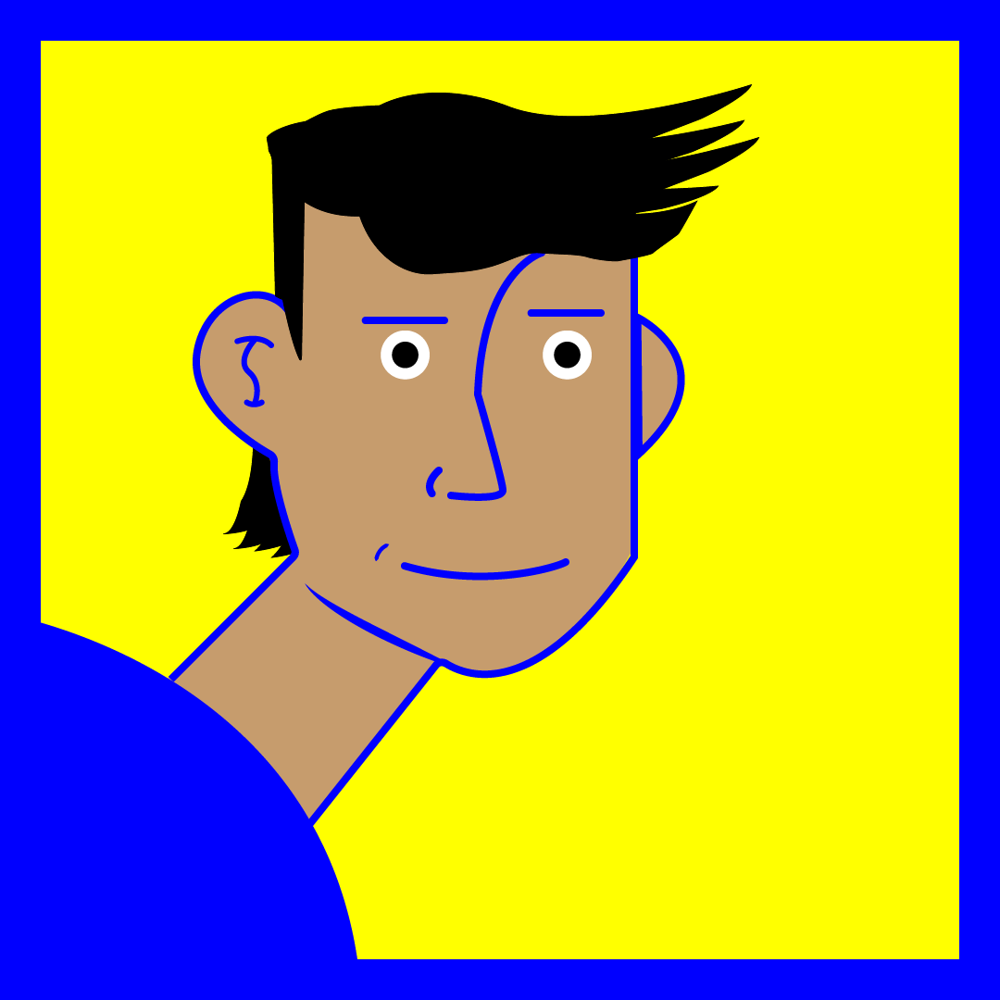

Adobe Illustrator
Adobe Illustratior is my faviourite computer software to use in combination with Procreate, i tend to do my sketching in Procreate and then export it to Illustrator so i can then refine it and turn it into a vector illustration which results in much better quality.

Procreate
Procreate is my faviourite app to use to draw up a little sketch and then turn it into a fullt developed drawing or painting. Since i started using Procreate i learned so much more about art and drawing and it has given me a better idea when it comes to putting pen to paper or in my case, pen to glass.